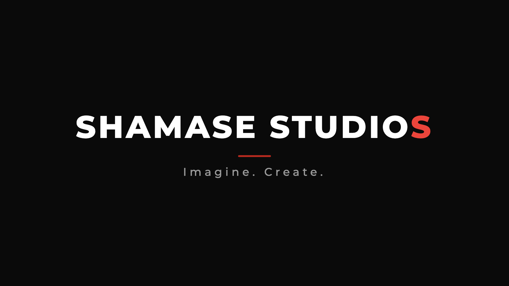
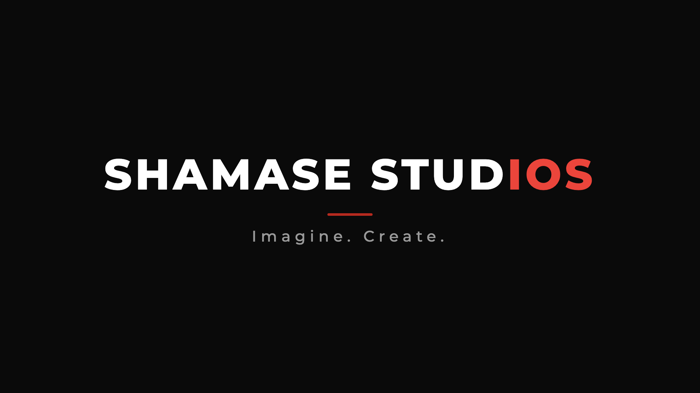
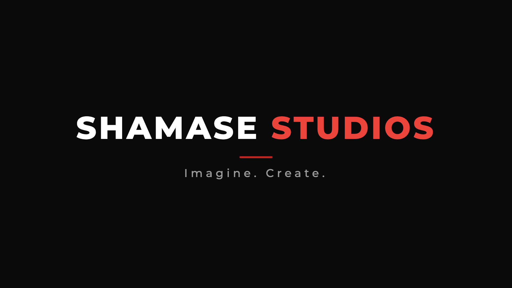
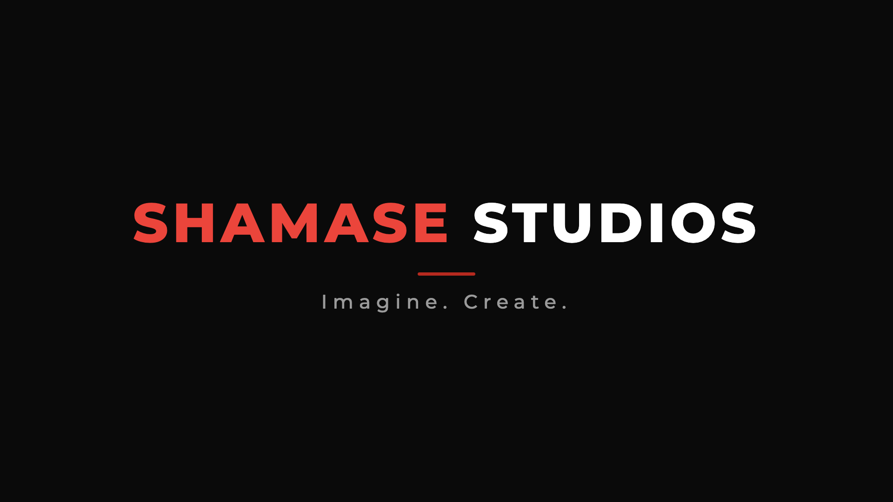

Shamase Studios, Logos
Red-line lockup. Vertical = 9:16.
Core, white / red / landscape / vertical
 1 vertical dark line
1 vertical dark line 2 landscape dark line
2 landscape dark line 3 vertical white line
3 vertical white line 4 landscape white line
4 landscape white lineTwo-tone options, pick a red split

tt 1 lastS
tt 2 last3
tt 3 word
tt 4 first